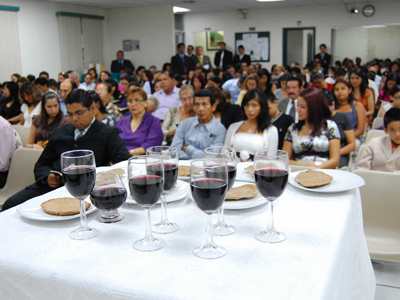

Celebracion de la Semana Santa
En que consiste la Semana Santa
¿Que es la Semana Santa?

La Semana Santa es el momento litúrgico más intenso de todo el año. Sin embargo, para muchos católicos se ha convertido sólo en una ocasión de descanso y diversión. A la Semana Santa se le llamaba en un principio “La Gran Semana”. Ahora se le llama Semana Santa o Semana Mayor y a sus días se les dice días santos. Esta semana comienza con el Domingo de Ramos y termina con el Domingo de Pascua. Lo importante de este tiempo no es el recordar con tristeza lo que Cristo padeció, sino entender por qué murió y resucitó. Es celebrar y revivir su entrega a la muerte por amor a nosotros y el poder de su Resurrección, que es primicia de la nuestra.La Semana Santa fue la última semana de Cristo en la tierra. Su Resurrección nos recuerda que los hombres fuimos creados para vivir eternamente junto a Dios.
Dias de Celebracion J,V,S,D
Jueves Santo
Este día recordamos la Última Cena de Jesús con sus apóstoles en la que les lavó los pies dándonos un ejemplo de servicialidad. En la Última Cena, Jesús se quedó con nosotros en el pan y en el vino, nos dejó su cuerpo y su sangre. Es el jueves santo cuando instituyó la Eucaristía y el Sacerdocio. Al terminar la última cena, Jesús se fue a orar, al Huerto de los Olivos. Ahí pasó toda la noche y después de mucho tiempo de oración, llegaron a aprehenderlo.
Viernes Santo

Ese día recordamos la Pasión de Nuestro Señor: Su prisión, los interrogatorios de Herodes y Pilato; la flagelación, la coronación de espinas y la crucifixión. Lo conmemoramos con un Via Crucis solemne y con la ceremonia de la Adoración de la Cruz.
Sabado Santo o Sabado de Gloria

Se recuerda el día que pasó entre la muerte y la Resurrección de Jesús. Es un día de luto y tristeza pues no tenemos a Jesús entre nosotros. Las imágenes se cubren y los sagrarios están abiertos. Por la noche se lleva a cabo una vigilia pascual para celebrar la Resurrección de Jesús. Vigilia quiere decir “ la tarde y noche anteriores a una fiesta.”. En esta celebración se acostumbra bendecir el agua y encender las velas en señal de la Resurrección de Cristo, la gran fiesta de los católicos.
Domingo de resurrección o Domigo de Pascua:

Es el día más importante y más alegre para todos nosotros, los católicos, ya que Jesús venció a la muerte y nos dio la vida. Esto quiere decir que Cristo nos da la oportunidad de salvarnos, de entrar al Cielo y vivir siempre felices en compañía de Dios. Pascua es el paso de la muerte a la vida.
Como lo celebran otras Religiones
Testigos de Jehová

Los miembros de esta religión celebran la Cena del Señor con pan sin levadura y vino en sus congregaciones. A esta fracción del pan solo pueden acercarse las personas ungidas –según sus escritos– aquellos que tengan la esperanza de ir al cielo.
Los miembros de esta religión celebran la Cena del Señor con pan sin levadura y vino en sus congregaciones. A esta fracción del pan solo pueden acercarse las personas ungidas –según sus escritos– aquellos que tengan la esperanza de ir al cielo.
Centro Evangelístico
Durante toda la semana, de 06:00 a 21:30, se realizarán cultos de súplica y alabanza. También ayuno de 09:30 a 15:30 para pedir a Dios por el futuro del Ecuador.